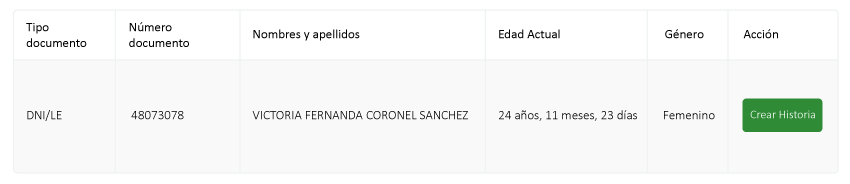

Manual de Usos
Ventanilla Única (HCEVU)
Manual de Usos
Ventanilla Única (HCEVU)
Presentación
La utilización de la tecnología de la información y comunicación como instrumento te acerca a los servicios de salud es un proyecto desarrollado a través de la creación de plataformas web especiales que sirven para brindar un servicio a la comunidad a través de internet, de la telemedicina, las historias clínicas electrónicas, los mensajes de textos y las redes sociales.
Es por ello que en la presente gestion se han puesto al servicio de la población una serie de herramientas tecnológicas en este caso las plataformas web con la finalidad de acercar los servicios de salud a los que más lo necesitan, como parte de la política de inclusión social. Dichos módulos son: programacion de citas a los diversos servicios medico, módulo triaje, cred e inmunizaciones y consulta externa.
INGRESO A LA HCEVU
a. Se debe usar el navegador Google Chrome o Firefox.

b. Debe escribir la url de la siguiente forma: http://hcevu.minsa.gob.pe/accounts/login/
c. Se debe escribir el usuario y contraseña (en este caso es el DNI del usuario generado por el sistema).
Nota: Por medidas de seguridad, se recomienda cambiar la contraseña, una vez ingresado al sistema).

DESCRIPCIÓN DE LA PÁGINA DE INICIO
REGISTRO DE PACIENTE NUEVO
Primer Caso : Pacientes con DNI
Se debe digitar el número correspondiente y clic en botón buscar.
En seguida aparece el resultado de la búsqueda y clic en botón CREAR HISTORIA.
Datos de Domicilio Actual
Según los datos de Reniec aparecen dichos datos además son datos se pueden actualizar y editar. El sistema automáticamente ubica por medio de un mapa interactivo la ubicación de la vivienda.
Datos de Reniec
En este caso aparecen los datos según Reniec, en este caso se debe anotar el N° Archivo clínico (HC física del EESS), completar los datos de grado de instrucción, ocupación y si es posible tipo de sangre.
Datos Provenientes de la Reniec
Aquí se visualiza los datos que provienen del DNI de la paciente, en el caso de datos de nacimiento verificar dichos datos con posibilidad de edición.
Datos del Financiador
El sistema verifica si el paciente cuenta con SIS con sus respectivos datos y si no cuenta.
Datos de Teléfono
Ingresar datos de teléfono fijo y/o celular.
Datos de Contactos Familiares.
1. Click en botón más (+) para registrar los datos del familiar.
2. Se debe escribir el DNI del familiar.
3.Clic en botón ELEGIR.
4. Se debe completar los datos: parentesco, Celular correo electrónico y clic en botón Guardar.
5. Se visualiza los datos del familiar con la posibilidad de eliminar o agregar un dato familiar más.
6. Al terminar de llenar los datos respectivos debe hacer clic en botón Guardar.
Segundo Caso: Pacientes indocumentados y pacientes extranjeros.
Se debe digitar los nombres del paciente y/o el número del pasaporte o carne de Extranjería.
Se debe llenar en forma manual TODOS los datos del paciente.
Nota: Los asteriscos que están al costado de cada campo son DATOS OBLIGATORIOS.
Al terminar de llenar los datos respectivos debe hacer clic en botón Guardar.
Registro de citas
Al grabar los datos de paciente nueva, se puede solicitar cita de la siguiente manera:
Abre una nueva ventana y se va seleccionar la unidad prestadora de salud(ups) que corresponda a la paciente. Nos hace recordar que cuenta con SIS.
Click en el botón Buscar Servicios.
A continuacion aparece una nueva ventana con el resultado de la busqueda de UPS para concreter la cita, se observa el servicio a dirigirse, los cupos que cuenta , el codigo y el EESS.
Click en botón cita
En la nueva ventana , se visualiza el calendario de programacion de los profesionales que estan programados y se elige segun convenga el paciente.
Escogiendo el dia y turno del professional, el Sistema emite la conformidad de la cita y si esta deacuerdo el paciente, click en boton Confirmar.
Ticket que se entrega al paciente.